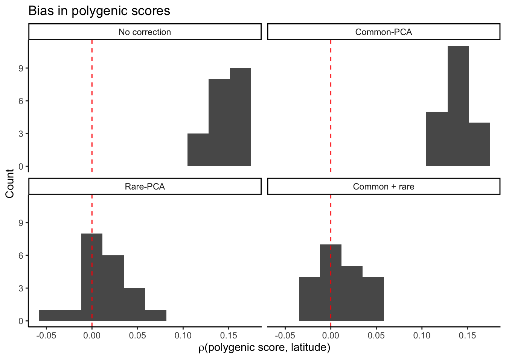
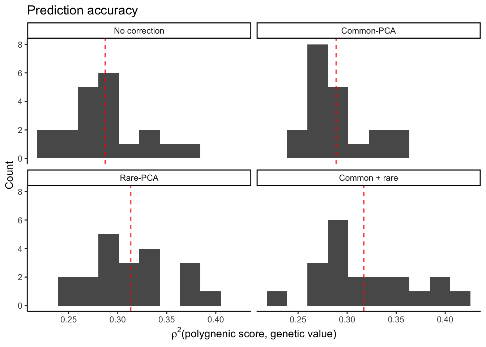
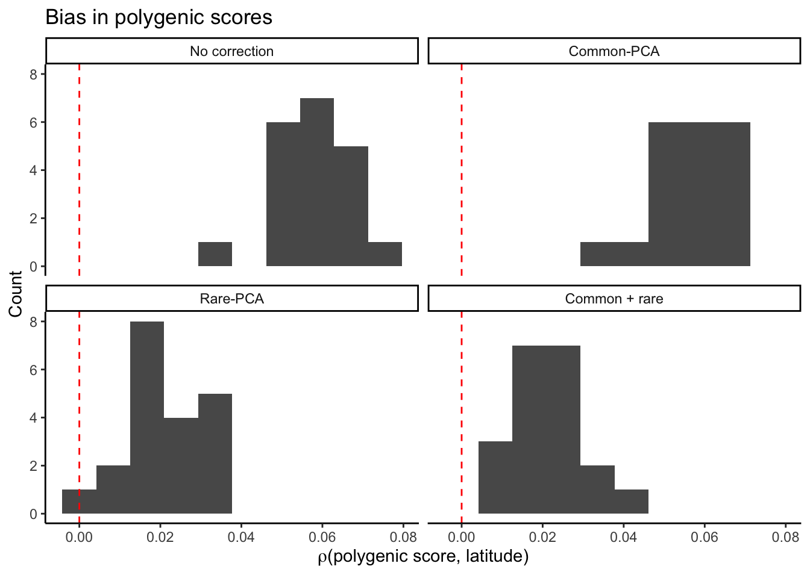
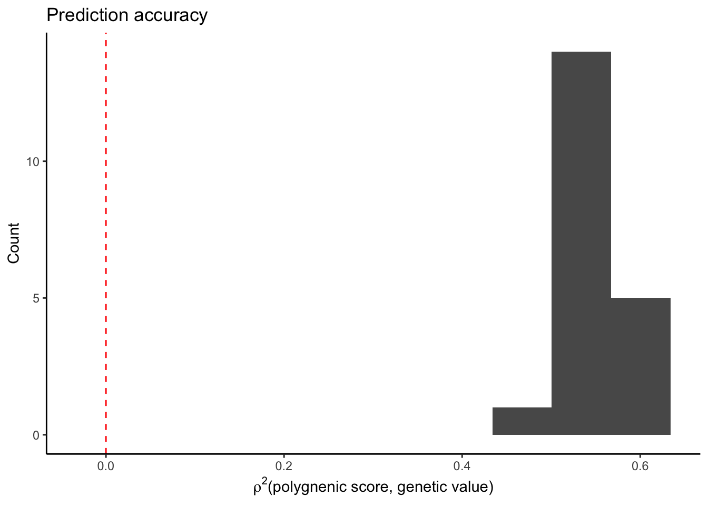
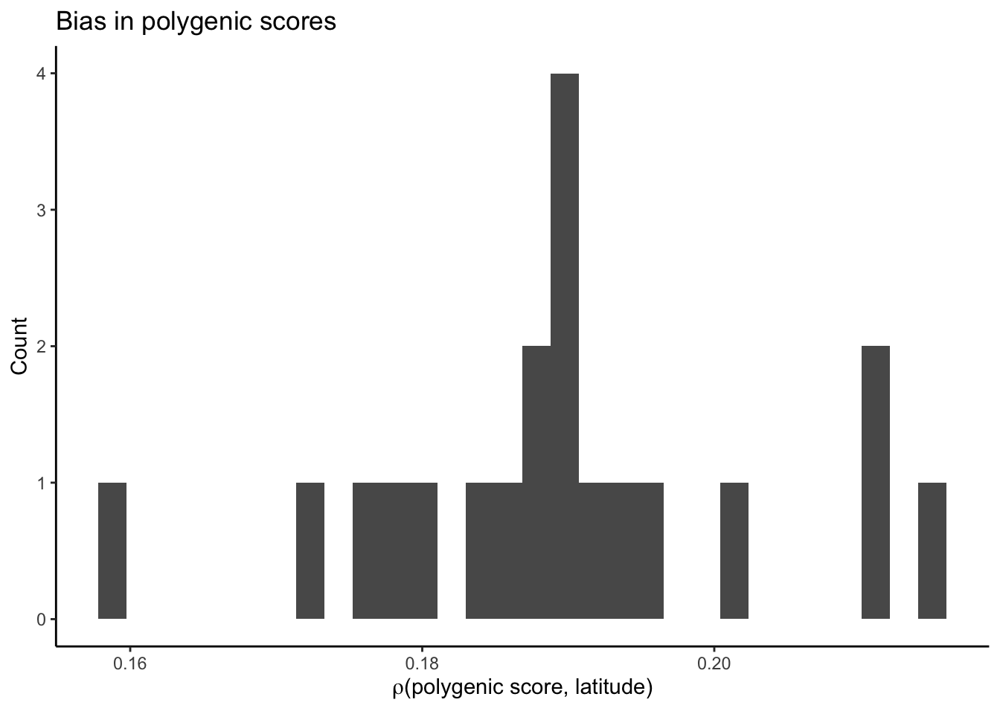
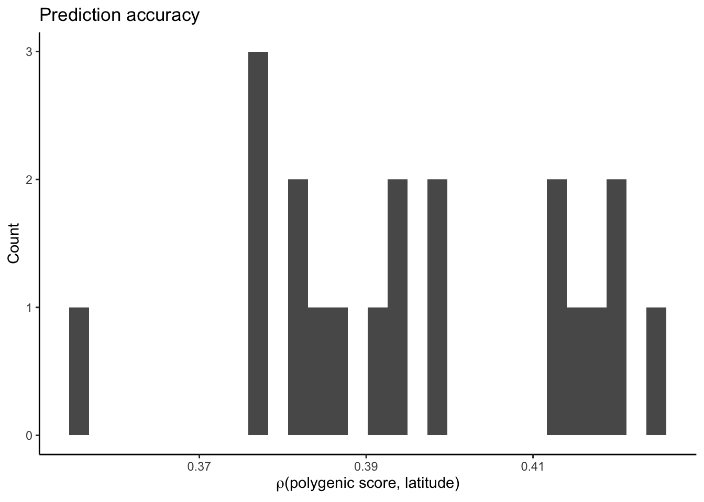
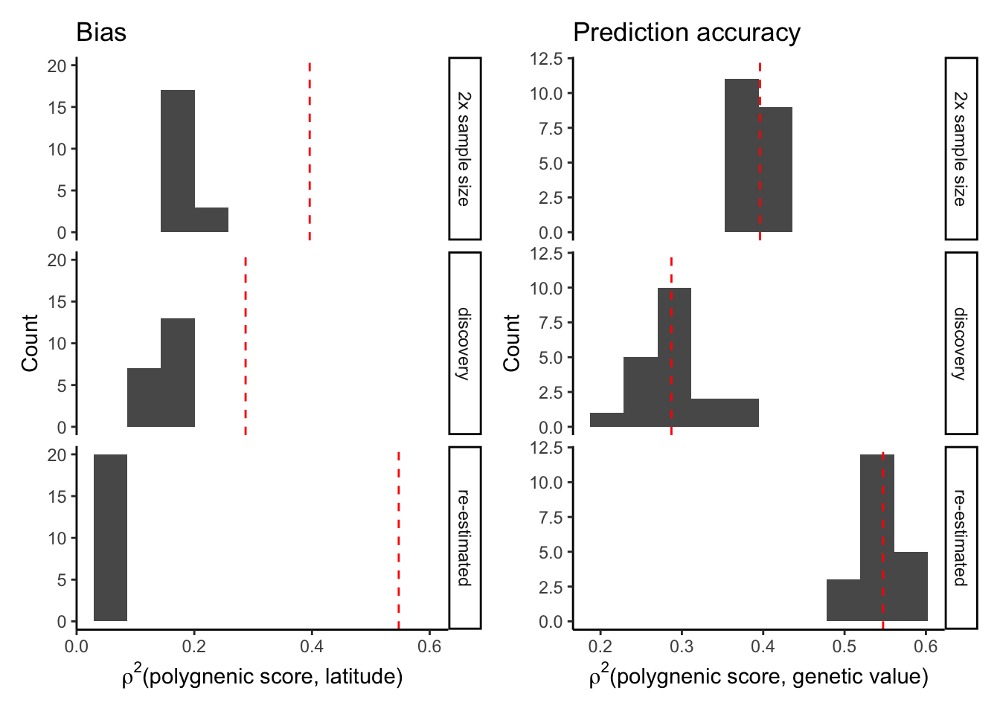

Last updated: 2020-12-22
Checks: 6 1
Knit directory: popstruct_scripts/
This reproducible R Markdown analysis was created with workflowr (version 1.6.2). The Checks tab describes the reproducibility checks that were applied when the results were created. The Past versions tab lists the development history.
The R Markdown is untracked by Git. To know which version of the R Markdown file created these results, you’ll want to first commit it to the Git repo. If you’re still working on the analysis, you can ignore this warning. When you’re finished, you can run wflow_publish to commit the R Markdown file and build the HTML.
Great job! The global environment was empty. Objects defined in the global environment can affect the analysis in your R Markdown file in unknown ways. For reproduciblity it’s best to always run the code in an empty environment.
The command set.seed(20201202) was run prior to running the code in the R Markdown file. Setting a seed ensures that any results that rely on randomness, e.g. subsampling or permutations, are reproducible.
Great job! Recording the operating system, R version, and package versions is critical for reproducibility.
Nice! There were no cached chunks for this analysis, so you can be confident that you successfully produced the results during this run.
Great job! Using relative paths to the files within your workflowr project makes it easier to run your code on other machines.
Great! You are using Git for version control. Tracking code development and connecting the code version to the results is critical for reproducibility.
The results in this page were generated with repository version 99813ec. See the Past versions tab to see a history of the changes made to the R Markdown and HTML files.
Note that you need to be careful to ensure that all relevant files for the analysis have been committed to Git prior to generating the results (you can use wflow_publish or wflow_git_commit). workflowr only checks the R Markdown file, but you know if there are other scripts or data files that it depends on. Below is the status of the Git repository when the results were generated:
Ignored files:
Ignored: .DS_Store
Ignored: .Rproj.user/
Ignored: Archived/
Ignored: analysis/.DS_Store
Ignored: burden_msprime/.DS_Store
Ignored: burden_msprime/generate_burden/.DS_Store
Ignored: data/.DS_Store
Ignored: data/burden_msprime/
Ignored: data/burden_msprime2/
Ignored: data/gwas/
Ignored: data/ukmap/
Ignored: gwas/.DS_Store
Ignored: gwas/grid/.DS_Store
Ignored: gwas/grid/tau-9/.DS_Store
Ignored: gwas/grid/tau-9/scripts/.DS_Store
Ignored: gwas/grid/tau-9/scripts/generate_genotypes/.DS_Store
Ignored: gwas/grid/tau-9/scripts/gwas/.DS_Store
Ignored: gwas/grid/tau100/.DS_Store
Ignored: gwas/grid/tau100/scripts/.DS_Store
Ignored: gwas/grid/tau100/scripts/generate_genotypes/.DS_Store
Ignored: gwas/grid/tau100/scripts/gwas/.DS_Store
Ignored: gwas/ukb/.DS_Store
Ignored: gwas/ukb/scripts/.DS_Store
Ignored: optimize_migration_rate/.DS_Store
Ignored: optimize_migration_rate/complex_dem/.DS_Store
Ignored: optimize_migration_rate/grid/.DS_Store
Ignored: output/plots/
Ignored: pca_plots/.DS_Store
Ignored: prs/.DS_Store
Ignored: prs/grid/.DS_Store
Ignored: qqplots/.DS_Store
Ignored: qqplots/fixed_effects/.DS_Store
Ignored: qqplots/lmms/.DS_Store
Ignored: revisions/.DS_Store
Ignored: shared_scripts/gwas/
Ignored: shared_scripts/prs/
Ignored: shared_scripts/simphenotype/
Ignored: sib_analysis/.DS_Store
Ignored: sib_analysis/complex_dem/.DS_Store
Ignored: sib_analysis/grid/.DS_Store
Ignored: sib_analysis/grid/tau100/mates/
Ignored: simulating_genotypes/.DS_Store
Ignored: simulating_genotypes/grid/.DS_Store
Ignored: simulating_phenotypes/.DS_Store
Untracked files:
Untracked: analysis/biasvaccuracy_prsascertainment.Rmd
Untracked: analysis/biasvaccuracy_prsascertainment.nb.html
Untracked: analysis/plotting_prs_sib_effects.Rmd
Untracked: analysis/plotting_prs_sib_effects.nb.html
Untracked: analysis/plottingprs_distribution_gridt.Rmd
Untracked: analysis/plottingprs_distribution_gridt.nb.html
Untracked: analysis/plt_burden_association.Rmd
Untracked: analysis/plt_ukb_unrelated_prs.Rmd
Untracked: analysis/plt_ukb_unrelated_prs.nb.html
Untracked: analysis/prs_wt_finemapping.Rmd
Untracked: analysis/prs_wt_finemapping.nb.html
Unstaged changes:
Modified: analysis/_site.yml
Modified: analysis/index.Rmd
Modified: burden_msprime/plt_burden_association_t100.Rmd
Modified: burden_msprime/plt_burden_association_t100.nb.html
Deleted: revisions/figuring_out_prediction_accuracy.Rmd
Deleted: revisions/figuring_out_prediction_accuracy.nb.html
Deleted: revisions/figuring_out_prediction_accuracy2.Rmd
Deleted: revisions/figuring_out_prediction_accuracy2.nb.html
Note that any generated files, e.g. HTML, png, CSS, etc., are not included in this status report because it is ok for generated content to have uncommitted changes.
There are no past versions. Publish this analysis with wflow_publish() to start tracking its development.
We were seeing that prediction accuracy, measured as the correlation between the polygenic score and genetic value, was much higher (~2x) when the variants were discovered in one sample (N = 9K) but the effects were re-estimated in siblings (N = 9k). This prediction accuracy was even higher than a fully siblig gwas (also 9k) where presumably the effects are more unbiased (not as impacted by stratification).
We think this may have something to do with winner’s curse or the fact that the increase in accuracy is due to the fact that the effects are re-estimated in an independent sample. To test this, let’s ignore the siblings and calculate PRS in two ways:
effects estimated in the discovery sample (this is what is normally done).
variants discovered in a GWAS in unrelated individuals and effects re-estimated in an independent sample.
Let’s calculate both bias and prediction accuracy in both ways.
library(ggplot2)
library(data.table)
library(dplyr)
Attaching package: 'dplyr'The following objects are masked from 'package:data.table':
between, first, lastThe following objects are masked from 'package:stats':
filter, lagThe following objects are masked from 'package:base':
intersect, setdiff, setequal, unionlibrary(rprojroot)
library(patchwork)
F = is_rstudio_project$make_fix_file()
options(dplyr.summarise.inform=FALSE) Question: What is the accuracy of polygenic risk prediction when we estimate effects in the same sample as the discovery set?
Plot the bias in polyegenic score measured by the correlation between residual polygenic score and latitude (the confounding environmental variable).
#effects discovered and estimated in training set and
#prs predicted in 3rd set (used to construct sibling haplotypes)
prs1 = fread(F("data/gwas/grid/genotypes/tau100/ss500/revisions/prs_prediction/prs1sample/prs.smooth.a1_p3.all.nc.sscore"))
colnames(prs1) = c("rep","IID","pcs0","cm","re","cmre")
mprs1 = reshape2::melt(prs1,id.vars = c("rep","IID"),
value.name = "prs",
variable.name = "correction")
#load genetic values for individuals in the sample we are predicting - to calculate prediction accuracy
gvalue1 = fread(F("data/gwas/grid/genotypes/tau100/ss500/revisions/prs_prediction/gvalues/gvalue.p3.all.sscore"))
colnames(gvalue1) = c("rep","IID","gvalue")
#load latitude information - to calculate bias
pop1 = fread(F("data/gwas/grid/genotypes/tau100/ss500/iid_sib.txt"))
#add latitude info
mprs1 = merge(mprs1, pop1, by="IID")
#add genetic value
mprs1 = merge(mprs1, gvalue1, by=c("rep","IID"))
#center the prs and subtract out genetic value
mprs1 = mprs1%>%
group_by(rep,correction)%>%
mutate(prs.adjusted = prs - mean(prs),
prs.adjusted = prs.adjusted - gvalue)
#calculate the bias and prediction accuracy
mprs1.bias = mprs1 %>%
group_by(rep,correction)%>%
summarize(rlat = cor(prs,latitude),
r2 = cor(prs,gvalue)^2)
plt_bias.all = ggplot(mprs1.bias,aes(rlat))+
geom_histogram(bins=10)+
facet_wrap( ~ correction,
labeller = as_labeller(c(
pcs0 = "No correction",
cm = "Common-PCA",
re = "Rare-PCA",
cmre = "Common + rare"
)))+
theme_classic()+
labs(x = bquote(rho*"(polygenic score, latitude)"),
y = "Count",
title = "Bias in polygenic scores")+
geom_vline(xintercept=0,color="red",linetype="dashed")
plt_bias.all
Rare variants more appropriately correct for stratification, that much we already knew. Let’s just get the plot for “no correction”, which is what we need.
plt1.bias = ggplot(mprs1.bias%>%
filter(correction=="pcs0"),
aes(rlat))+
geom_histogram()+
theme_classic()+
labs(x = bquote(rho*"(polygenic score, latitude)"),
y = "Count",
title = "Bias")Now plot the prediction accuracy when effect estimation and discovery in done in the same sample. We measure prediction accuracy as the correlation between polygenic scores and true genetic values.
#calculate mean prediction accuracy across replicates
mprs1.bias.mean = mprs1.bias%>%
group_by(correction)%>%
summarize(rlat = mean(rlat),
r2 = mean(r2))
plt1.r2 = ggplot(mprs1.bias,
aes(r2))+
geom_histogram(bins=10)+
theme_classic()+
geom_vline(data=mprs1.bias.mean,
aes(xintercept = r2),
color="red",
linetype="dashed")+
facet_wrap( ~ correction,
labeller = as_labeller(c(
pcs0 = "No correction",
cm = "Common-PCA",
re = "Rare-PCA",
cmre = "Common + rare"
)))+
labs(x = bquote(rho^2*"(polygnenic score, genetic value)"),
y = "Count",
title = "Prediction accuracy")
plt1.r2
Now, let’s plot both bias and prediction accuracy if we ascertain variants in one sample and re-estimate in another.
prs2 = fread(F("data/gwas/grid/genotypes/tau100/ss500/revisions/prs_prediction/prs/a1_r2_p3.smooth.pcs0.all.sscore"))
colnames(prs2) = c("rep","IID","pcs0","cm","re","cmre")
mprs2 = reshape2::melt(prs2,id.vars = c("rep","IID"),
value.name = "prs",
variable.name = "correction")
#load genetic values for individuals in the sample we are predicting - to calculate prediction accuracy
#same as the gvalue1
#add latitude info
mprs2 = merge(mprs2, pop1, by="IID")
#add genetic value
mprs2 = merge(mprs2, gvalue1, by=c("rep","IID"))
#center the prs and subtract out genetic value
mprs2 = mprs2%>%
group_by(rep,correction)%>%
mutate(prs.adjusted = prs - mean(prs),
prs.adjusted = prs.adjusted - gvalue)
#calculate the bias and prediction accuracy
mprs2.bias = mprs2 %>%
group_by(rep,correction)%>%
summarize(rlat = cor(prs,latitude),
r2 = cor(prs,gvalue)^2)
plt_bias.all = ggplot(mprs2.bias,aes(rlat))+
geom_histogram(bins=10)+
facet_wrap( ~ correction,
labeller = as_labeller(c(
pcs0 = "No correction",
cm = "Common-PCA",
re = "Rare-PCA",
cmre = "Common + rare"
)))+
theme_classic()+
labs(x = bquote(rho*"(polygenic score, latitude)"),
y = "Count",
title = "Bias in polygenic scores")+
geom_vline(xintercept=0,color="red",linetype="dashed")
plt_bias.all
The bias is much smaller when the effects are re-estimated. Now plot the prediction accuracy.
plt2.bias = ggplot(mprs2.bias%>%
filter(correction=="pcs0"),
aes(rlat))+
geom_histogram()+
theme_classic()+
labs(x = bquote(rho*"(polygenic score, latitude)"),
y = "Count",
title = "Bias")
#calculate mean prediction accuracy across replicates
mprs2.bias.mean = mprs2.bias%>%
group_by(correction)%>%
summarize(rlat = mean(rlat),
r2 = mean(r2))
plt2.r2 = ggplot(mprs2.bias%>%
filter(correction=="pcs0"),
aes(r2))+
geom_histogram(bins=10)+
geom_vline(xintercept=0,color="red",linetype="dashed")+
theme_classic()+
labs(x = bquote(rho^2*"(polygnenic score, genetic value)"),
y = "Count",
title = "Prediction accuracy")
plt2.r2
The prediction accuracy is much higher when effects are re-estimated in a different sample.
Now let’s look at these plots when we discover and estimate effects in the sample but with a size twice the original sample. The question being: is the increase in prediction accuracy when we re-estimate an effect of re-estimation or due to an increase in sample size.
prs.combined = fread(F("data/gwas/grid/genotypes/tau100/ss500/revisions/combined_sample/prs/gridt100_prs_smooth.combined.all.nc.sscore"))
colnames(prs.combined) = c("rep","IID","prs")
prs.combined = merge(prs.combined,
gvalue1,
by=c("rep","IID"))
prs.combined = merge(prs.combined,pop1,by="IID")
prs.combined$ascertainment = "2x sample size"
#center the prs and subtract out genetic value
prs.combined = prs.combined%>%
group_by(rep)%>%
mutate(prs.adjusted = prs - mean(prs),
prs.adjusted = prs.adjusted - gvalue)
#calculate the bias and prediction accuracy
prs.combined.bias = prs.combined %>%
group_by(rep)%>%
summarize(rlat = cor(prs,latitude),
r2 = cor(prs,gvalue)^2)
prs.combined.bias$ascertainment = "2x sample size"
plt_bias.combined = ggplot(prs.combined.bias,
aes(rlat))+
geom_histogram()+
theme_classic()+
labs(x = bquote(rho*"(polygenic score, latitude)"),
y = "Count",
title = "Bias in polygenic scores")
plt_bias.combined`stat_bin()` using `bins = 30`. Pick better value with `binwidth`.
plt_r2.combined = ggplot(prs.combined.bias,
aes(r2))+
geom_histogram()+
theme_classic()+
labs(x = bquote(rho*"(polygenic score, latitude)"),
y = "Count",
title = "Prediction accuracy")
plt_r2.combined`stat_bin()` using `bins = 30`. Pick better value with `binwidth`.
Combine the relevant ‘bias’ and ‘prediction accuracy’ plots into one for an easier comparison.
mprs1.bias = mprs1.bias%>%
filter(correction=="pcs0")%>%
select(rep,rlat,r2)%>%
mutate(ascertainment = "discovery")%>%
ungroup()
mprs2.bias = mprs2.bias%>%
filter(correction=="pcs0")%>%
select(rep,rlat,r2)%>%
mutate(ascertainment = "re-estimated")%>%
ungroup()
mprs.bias = rbind(mprs1.bias, mprs2.bias,prs.combined.bias)
mprs.bias.mean = mprs.bias %>%
group_by(ascertainment)%>%
summarize(rlat = mean(rlat),
r2 = mean(r2))
plt.bias = plt.r2 = ggplot(mprs.bias,
aes(rlat))+
geom_histogram(bins=10)+
theme_classic()+
geom_vline(data=mprs.bias.mean,
aes(xintercept = r2),
color="red",
linetype="dashed")+
facet_grid(ascertainment~.)+
labs(x = bquote(rho^2*"(polygnenic score, latitude)"),
y = "Count",
title = "Bias")
plt.r2 = ggplot(mprs.bias,
aes(r2))+
geom_histogram(bins=10)+
theme_classic()+
geom_vline(data=mprs.bias.mean,
aes(xintercept = r2),
color="red",
linetype="dashed")+
facet_grid(ascertainment~.)+
labs(x = bquote(rho^2*"(polygnenic score, genetic value)"),
y = "Count",
title = "Prediction accuracy")
plt.bias + plt.r2
sessionInfo()R version 4.0.3 (2020-10-10)
Platform: x86_64-apple-darwin17.0 (64-bit)
Running under: macOS Catalina 10.15.7
Matrix products: default
BLAS: /Library/Frameworks/R.framework/Versions/4.0/Resources/lib/libRblas.dylib
LAPACK: /Library/Frameworks/R.framework/Versions/4.0/Resources/lib/libRlapack.dylib
locale:
[1] en_US.UTF-8/en_US.UTF-8/en_US.UTF-8/C/en_US.UTF-8/en_US.UTF-8
attached base packages:
[1] stats graphics grDevices utils datasets methods base
other attached packages:
[1] patchwork_1.0.1 rprojroot_1.3-2 dplyr_1.0.2 data.table_1.13.2
[5] ggplot2_3.3.2 workflowr_1.6.2
loaded via a namespace (and not attached):
[1] Rcpp_1.0.5 plyr_1.8.6 pillar_1.4.6 compiler_4.0.3
[5] later_1.1.0.1 git2r_0.27.1 tools_4.0.3 digest_0.6.27
[9] evaluate_0.14 lifecycle_0.2.0 tibble_3.0.4 gtable_0.3.0
[13] pkgconfig_2.0.3 rlang_0.4.8 rstudioapi_0.11 yaml_2.2.1
[17] xfun_0.19 withr_2.3.0 stringr_1.4.0 knitr_1.30
[21] generics_0.1.0 fs_1.5.0 vctrs_0.3.4 grid_4.0.3
[25] tidyselect_1.1.0 glue_1.4.2 R6_2.5.0 rmarkdown_2.5
[29] farver_2.0.3 reshape2_1.4.4 purrr_0.3.4 magrittr_1.5
[33] backports_1.1.10 scales_1.1.1 promises_1.1.1 ellipsis_0.3.1
[37] htmltools_0.5.0 colorspace_1.4-1 httpuv_1.5.4 labeling_0.4.2
[41] stringi_1.5.3 munsell_0.5.0 crayon_1.3.4